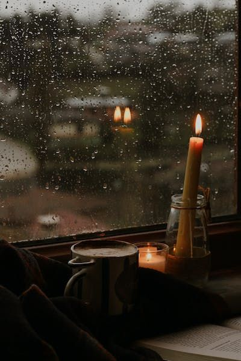
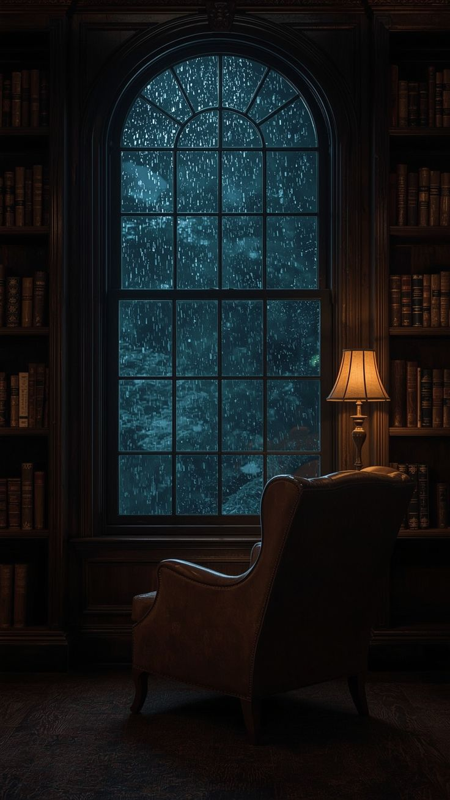

Mohabbat...

✦ Khaas Mulaqaat ✦
Kabhi kabhi sirf dil mein nahi rehti.
Woh dheere dheere insaan ke sawalon mein utarne lagti hai.
Aur phir...
Ek din aisa aata hai...
Jab insaan bina bataye hi us shakhs ke mustaqbil ke baare mein sochne lagta hai...
Jiske baare mein usne kabhi sochne ka iraada bhi nahi kiya tha.
Agle din daftar ka mahaul roz ki tarah hi tha.
Subah se kaam kaafi tha.
Naye reports...
Pending mails...
Aur clients ki updates.
Lekin Fahad ki team ko kisi baat ki jaldi nahi thi.
Sabko pata tha...
Shaam tak saara kaam aaram se mukammal ho jayega.
Isliye har koi apne kaam ke saath saath halki phulki baaton mein bhi masroof tha.
Waqt guzarta gaya.
Zohar bhi guzar gayi.
Asr ki namaz ke baad sab dobara apni apni desk par aa baithe.
Shaam ke kareeb chhe baj rahe the.
Office mein kaam chal raha tha...
Magar saath hi idhar udhar ki guftagu bhi.
Koi chai ki baat kar raha tha...
Koi weekend ka plan bana raha tha...
Aur koi Excel ki kisi file mein uljha hua tha.
Fahad bhi apni screen par nazar jamaaye baitha tha...
Magar uske zehan mein aaj kuch aur hi chal raha tha.
Kal raat Qasim se hui baat baar baar yaad aa rahi thi.
Usne khud se kaha tha...
"Kab tak sirf dil hi dil mein rakhoonga?"
Usse kisi izhaar ki jaldi nahi thi.
Na hi woh kisi hadd ko paar karna chahta tha.
Lekin...
Ek baat zaroor jaan lena chahta tha.
Kahin der to nahi ho rahi...
Kahin uske ghar wale uske liye rishta to nahi dekh rahe...
Ye soch kar usne himmat jama ki.
Aur pehli baar...
Kaam se hat kar Aamina se ek sawal poochne ka faisla kiya.
"Aamina... ek baat poochun?"
Aamina ne apni file se nazar utha kar dekha.
"Ji, boliye."
Fahad ne bilkul aam lehje mein kaha,
"Aapki age bees saal hai na... aur aapki badi behen ki age teiis?"
"Ji."
"To... ghar mein shaadi ki baatein nahi hoti?"
Aamina ne bina kisi jhijhak ke jawab diya.
"Behen ke liye filhaal rishta dekh rahe hain."
"Main to abhi chhoti hoon."
Fahad ne halka sa sir hila diya.
"Achha..."
Aamina muskura kar boli,
"Lekin ghar wale mazaak mein kehte rehte hain ke dono behnon ki shaadi ek hi saath kar denge."
Ye lafz sunte hi...
Fahad ke dil ki dhadkan ek pal ko tez ho gayi.
Magar usne apne chehre par kuch zahir nahi hone diya.
"Achha... to phir aap bhi jaldi kar lengi?"
Usne bilkul aam andaaz mein poocha.
Aamina halki si hans padi.
"Nahi nahi..."
"Itni bhi jaldi nahi."
"Kam se kam do saal tak to kahin nahi."
"Mujhe abhi padhai bhi poori karni hai."
Fahad ke dil ne chupke se sukoon ki saans li.
Do saal...
Uske liye ye do lafz hi kaafi the.
Lekin ek sawal ab bhi baaki tha.
Aur wahi asal wajah thi...
Jisne usse ye guftagu shuru karne par majboor kiya tha.
Fahad kuch lamhe khamosh raha.
Phir dheere se bola,
"Ek aur baat poochun?"
Aamina ne pursukoon lehje mein kaha,
"Poochiye."
"Thodi personal hai."
Aamina ne halki si muskurahat ke saath jawab diya,
"Ye to sawal par depend karta hai... kitni personal hai."
Fahad ne nazrein ek pal ke liye screen par jama di.
Uska dil pehli baar itni tezi se dhadak raha tha.
Ye sawal...
Ya to uske dil ko sukoon dene wala tha...
Ya phir usse bechain kar dene wala tha.
Usne himmat karke pooch hi liya.
"Aapko... nikah ke liye koi pasand hai?"
"...Ya koi aapko pasand karta hai?"
Aamina ne ek pal ke liye Fahad ki taraf dekha.
Fahad ki nazrein jhuki hui thi.
Usne foran aur bilkul saaf lehje mein jawab diya,
"Nahi."
"Mujhe in sab cheezon mein koi interest nahi hai."
"Nikah hoga to ghar walon ki raza se hi hoga."
Fahad ne dheere se dobara poocha,
"Matlab... koi bhi nahi?"
Aamina ne halka sa muskura kar kaha,
"Nahi baba..."
"Koi bhi nahi."
Us ek jawab ne...
Fahad ke dil mein ek saath do ehsaas paida kar diye.
Ek sukoon...
Aur ek naya darr.
Sukoon is baat ka...
Ke uski zindagi mein koi aur nahi tha.
Aur darr is baat ka...
Ke jis ladki se usse mohabbat ho gayi thi...
Woh apni zindagi ka har faisla apne ghar walon ke hawale kar chuki thi.
Fahad ne foran baat sambhali.
"Sorry..."
"Agar mera sawal munasib na laga ho."
"Mera koi galat matlab nahi tha."
"Bas... yun hi zehan mein aa gaya."
Aamina ne sirf itna kaha,
"It's okay."
Aur phir dono dobara apne apne kaam mein masroof ho gaye.
Aamina ka jawab sun kar Fahad ke dil ko itna to sukoon mil gaya...
Ke filhaal uski zindagi mein koi nahi tha.
Lekin usi pal...
Ek nayi fikr ne bhi uske dil mein jagah bana li.
Aamina ne saaf keh diya tha...
Ke uske liye ghar walon ki raza hi sab kuch thi.
Woh apni pasand se zyada...
Apne walidain ki pasand ko ahmiyat deti thi.
Aur shayad...
Yahi uski asli khubsurti thi.
Fahad samajh gaya tha...
Ke agar kabhi uske dil mein kisi ke liye mohabbat paida bhi ho jaaye...
To woh uska izhar kabhi nahi karegi.
Uska mizaj hi aisa tha.
Haya uski pehchaan thi...
Aur khamoshi uska zevar.
Woh un ladkiyon mein se nahi thi...
Jo har baat apni saheliyon ke saath baant deti hain.
Na uski koi khaas dost thi...
Na hi uski duniya ghar ki dehleez se bahar shuru hoti thi.
Uski har baat...
Har khushi...
Har pareshani...
Aakhir ja kar uske ghar walon tak hi pahunchti thi.
Fahad ne us din pehli baar mehsoos kiya...
Ke jis raaste par usne qadam rakha hai...
Woh itna aasaan nahi hoga.
Mohabbat to ho chuki thi...
Magar us mohabbat tak pahunchne ka safar...
Abhi bas shuru hua tha.
Aur us safar mein...
Kitni aazmaishen likhi thi...
Ye baat usse usi din andaza ho gayi thi.
Us din Aamina ke do teen jumlon ne...
Fahad ke dil mein naye sawal paida kar diye the.
Usse itna to sukoon mil gaya tha...
Ke Aamina ki zindagi mein filhaal koi nahi tha.
Magar usse ye bhi samajh aa gaya tha...
Ke agar kabhi is safar ko anjaam tak pahunchana hai...
To ye raasta itna aasaan nahi hoga.
Shaam se lekar raat tak...
Yehi baatein uske zehan mein ghoomti rahi.
Aur aakhir...
Usne ek faisla kar liya.
Sabse pehle...
Woh apni Baji aur Bhai se baat karega.
Woh un dono ki rai sunna chahta tha.
Raat ke kareeb nau baje...
Office se ghar laut kar usne khana khaya...
Aur phir Qasim ko phone mila diya...
Raat ke kareeb nau baje...
Office se ghar laut kar usne khana khaya...
Aur phir Qasim ko phone mila diya.
"Hello..."
"Kidhar hai?"
"Ghar par hi hoon."
Qasim ne jawab diya.
"Sun..."
"Main abhi office se nikla tha, ab ghar pahucha hoon."
"Tu das baje mil."
"Ek zaroori kaam hai."
Qasim turant bol pada,
"Kya hua?"
"Kahan jaana hai?"
Fahad ne sirf itna kaha,
"Mil..."
"Sab bataunga."
"Theek hai."
Phone kat gaya.
Raat ke theek das baje...
Mohalle ke nukkad par dono roz ki tarah mil gaye.
Fahad Abbu ki bike lekar aaya tha.
Qasim peeche baith gaya.
Bike kuch hi door chali thi...
Ke Qasim se raha na gaya.
"Abe..."
"Ab to bata."
"Kahan jaa rahe hain?"
Fahad ne seedha saamne dekhte hue kaha,
"Baji ke ghar."
Qasim ne hairani se poocha,
"Baji ke ghar?"
"Kyun?"
Fahad ne muskurate hue kaha,
"Haan..."
"Chai bhi pee lenge."
Qasim hans pada.
"Saale..."
"Mujhe laga koi bahut bada kaam hai."
Bike apni raftaar se chalti rahi.
Thodi der baad Fahad ne achanak bike ek ice cream ki dukaan ke saamne rok di.
"Chal..."
"Ek minute."
Qasim bike se utarte hue bola,
"Ab kya hua?"
Fahad ne dukaan ki taraf dekhte hue kaha,
"Baji ke liye ice cream le lete hain."
"Khali haath jaana achha nahi lagta."
Qasim muskuraya.
"Wah..."
"Ye baat hai."
Dono ne ice cream li...
Aur phir dobara bike par baith kar nikal pade.
Fahad ke ghar aur uski Baji ke ghar ke darmiyan sirf das minute ka faasla tha.
Isliye zyada der nahi lagi.
Bike ja kar ghar ke bahar ruk gayi.
Fahad ne bell bajayi.
Kuch hi lamhon baad darwaza khula.
Baji ne dono ko ek saath dekha...
Aur hairani se boli,
"Are..."
"Tum dono is waqt?"
Qasim foran muskura diya.
"Chai peene aaye hain."
Fahad ne haath mein pakda hua ice cream ka packet unki taraf badha diya.
"Ye sambhaliye pehle."
Baji packet lete hue muskura padi.
"Lagta hai aaj bina matlab ke nahi aaye ho."
Fahad bhi muskura diya.
"Andar to aane do..."
"Phir batata hoon."
Baji hansi.
"Achha, chalo andar."
Sab andar aa gaye.
Baithte hi Fahad ne idhar udhar nazar daali.
"Bhai nahi aaye abhi?"
Usne poocha.
Baji kitchen ki taraf jaate hue boli,
"Nahi..."
"Bas raste mein hi honge."
"Pandrah-bees minute mein aa jayenge."
"Theek hai."
Fahad ne sirf itna hi kaha.
Baji ne peeche mud kar dono ki taraf dekha.
"Bolo..."
"Kya kaam hai?"
"Bina kaam ke to tum dono itni raat ko aane wale nahi."
Qasim foran hans pada.
"Kaam kaisa?"
"Kaafi din se dawat nahi mili thi..."
"Socha aaj khud hi aa jaate hain."
Baji muskura di.
"Haan haan..."
"Tumhari shakal dekh kar hi samajh aa gaya tha."
Fahad ne Qasim ki taraf dekh kar kaha,
"Chup baith."
"Bahut zaroori baat hai."
"Lekin pehle Bhai aa jaayein."
"Theek hai."
Baji ne bhi zyada kuch nahi poocha.
Thodi der tak yun hi idhar udhar ki baatein hoti rahi.
Office...
Mohalle ke log...
Aur rozmarra ki zindagi.
Kareeb bees minute baad...
Darwaze ki kundi khulne ki awaaz aayi.
"Assalamu Alaikum."
Bhai ghar ke andar aate hue bole.
"Wa Alaikum Assalam."
Sab ne ek saath jawab diya.
Jute utarte utarte unki nazar Fahad aur Qasim par padi.
"Are wah..."
"Aaj to mehfil lagi hui hai."
"Mujhe kisi ne bataya bhi nahi."
Baji muskura kar boli,
"Mehfil nahi..."
"In dono ko aapse koi kaam hai."
Bhai ne hairani se dono ki taraf dekha.
"Achha?"
"Kya baat hai?"
Fahad ne adab se kaha,
"Pehle aap dono aaram se khana kha lijiye."
"Phir baat karte hain."
Bhai hans diye.
"Hum akele thodi khaayenge."
"Tum dono bhi baitho."
Qasim foran bola,
"Nahi Bhai..."
"Hum dono khana kha kar aaye hain."
"Aaj sirf chai peene aaye hain."
Sab halki si hansi mein doob gaye.
Khana lag gaya.
Jab tak Bhai aur Baji khana kha rahe the...
Qasim ne ice cream ka packet uthaya aur bola,
"Baji..."
"Ye fridge mein mat rakh dena."
"Baad mein hum bhi khayenge."
Baji hans padi.
"Mujhe laga sirf humare liye laaye ho."
Qasim ne foran kaha,
"Humein itna bhi bewakoof mat samajhna."
"Apna hissa lekar hi aaye hain."
Kamre mein phir se hansi goonj uthi.
Thodi der baad...
Bhai aur Baji bhi khana kha kar aa baithe.
Qasim ne foran ice cream ka packet khol diya.
"Lo..."
"Ab iske liye hi to itni der se intezaar kar rahe the."
Sab halki si hansi mein doob gaye.
Do chaar minute tak yun hi mazaak chalta raha.
Phir Fahad ne ice cream ka cup table par rakh diya.
Uske chehre ki muskurahat dheere dheere gayab hone lagi.
Usne ek gehri saans li.
"Achha..."
"Ab jis kaam ke liye aaya hoon..."
"Uski baat kar lete hain."
Kamre mein ekdum khamoshi chha gayi.
Fahad ne halka sa muskura kar kaha,
"Lekin usse pehle..."
"Aap dono ek andaza lagaiye."
"Main kis baat ke liye aaya hoon?"
Baji ne pehla andaza lagaya.
"Salary badh gayi?"
Fahad ne gardan hila di.
"Nahi."
Bhai bole,
"Nayi job mil gayi?"
"Nahi."
"Gaadi lene ka plan hai?"
"Nahi."
Do teen aur andaze lagaye gaye...
Magar har baar Fahad bas muskura kar "Nahi" keh deta.
Aakhir kuch lamhe khamoshi ke baad...
Usne dheemi awaaz mein kaha,
"Mujhe..."
"Office mein ek ladki pasand aa gayi hai."
Ek pal ke liye kamra bilkul khamosh ho gaya.
Sabse pehle Bhai ne Fahad ki taraf dekha.
Phir bina ek pal gavaaye bole,
"Wohi ladki?"
"Jo meri shaadi mein stage par aayi thi?"
"Jiske saath hum sab ne photo bhi nikali thi?"
Fahad hairan reh gaya.
Usne foran unki taraf dekha.
"Haan..."
"Wohi."
Baji ne turant Bhai ki taraf dekh kar kaha,
"Maine kaha tha na..."
"Inhe pehle hi shak tha."
Fahad hairani se bola,
"Kya matlab?"
Baji hans padi.
"Ye pehle hi bol chuke the..."
"Ke tujhe us ladki se kuch na kuch zaroor hai."
Fahad ne foran safai di.
"Are nahi..."
"Aisa kuch bhi nahi hai."
"Mera uske saath kuch nahi chal raha."
"Bas..."
"Woh mujhe pasand hai."
"Isliye sabse pehle aap dono se baat karne aa gaya."
Baji ne halka sa muskura kar poocha,
"Achha..."
"To humse poochne aaye ho?"
Fahad ne dheere se sir hila diya.
"Haan."
"Mujhe khud samajh nahi aa raha..."
"Mujhe kya karna chahiye."
Qasim tab tak sirf khamosh baitha sab dekh raha tha.
Usne bhi shayad ye nahi socha tha...
Ke Fahad apne dil ki baat sabse pehle apni Baji aur Bhai se karega.
Baji kuch der tak Fahad ko dekhti rahi.
Phir unhone aahista se poocha,
"Achha..."
"Uske baare mein kya kya jaante ho?"
"Uske ghar ka mahaul kaisa hai?"
"Uske walid kya karte hain?"
"Unka mizaj kaisa hai?"
"Unke ghar mein kaun kaun hai?"
Fahad kuch lamhe khamosh raha.
Phir usne bahut sukoon se jawab diya,
"Jahan tak main uske baare mein jaanta hoon..."
"Bas itna hi jaanta hoon..."
"Ke woh ek parde wali..."
"Deendar ladki hai."
"Iske alawa..."
"Mujhe uske baare mein kuch jaanne ki zaroorat mehsoos hi nahi hui."
Kamre mein chand lamhon ki khamoshi chha gayi.
Baji ne dheere se muskurate hue kaha,
"Ye baat to hum bhi jaante hain."
"Maine usse shaadi mein dekha tha."
"Yaad hai..."
"Sab log khana kha rahe the."
"Lekin usne us waqt bhi apna naqab chehre se nahi hataya tha."
"Tabhi samajh aa gaya tha ke ladki deendar hai."
Phir unka lehja thoda sanjeeda ho gaya.
"Lekin Fahad..."
"Sirf itna jaan lena kaafi nahi hota."
"Shaadi sirf do logon ki nahi hoti..."
"Do gharon ki hoti hai."
"Uske ghar ka mahaul..."
"Unke sochne ka tareeqa..."
"Unke walidain ka mizaj..."
"Ye sab bhi utna hi zaroori hota hai."
Fahad aur Qasim dono khamoshi se unki baat sunte rahe.
Itne mein Bhai ne baat sambhali.
"Are..."
"Aisa bhi nahi hai."
"Shuru shuru mein itna hi pata hota hai."
"Jab rishta aage badhta hai..."
"Tabhi to insaan ek dusre ko jaanne ki koshish karta hai."
Unhone muskura kar Fahad ki taraf dekha.
"Abhi se sab kuch kaun jaanta hai?"
Qasim ne foran haan mein haan milayi.
"Bilkul."
"Ye baat sahi hai."
Bhai ne dobara kaha,
"Sabse pehle uske baare mein aaram se jaano."

✦ Moody Rain Night ✦
"Uski soch kya hai..."
"Usko kya pasand hai..."
"Kya pasand nahi."
"Uske ghar walon ka mahaul kaisa hai."
"Ye sab samajhna zaroori hai."
Fahad sirf khamoshi se sun raha tha.
Kabhi gardan hila deta...
Kabhi bas nazrein jhuka leta.
Uske zehan mein ek hi baat chal rahi thi.
Woh Aamina ko jaanne ke liye usse baat kaise kare...
Jab usne khud hi apne aur uske darmiyan hamesha ek hadd qayam rakhi thi.
Kuch der tak kamre mein khamoshi chhayi rahi.
Har koi apni apni soch mein dooba hua tha.
Aakhir Baji ne hi khamoshi todi.
"Ek baat bata..."
"Usse pata hai?"
Fahad ne foran gardan hila di.
"Nahi."
"Bilkul bhi nahi."
"Maine kabhi usse aisa kuch mehsoos bhi nahi hone diya."
Bhai ne poocha,
"Aur woh?"
"Kya uski taraf se kabhi aisa kuch laga?"
Fahad ne is baar bhi bina soche jawab diya.
"Nahi."
"Usne kabhi aisa koi mauqa hi nahi diya."
"Woh sirf utni hi baat karti hai..."
"Jitni zarurat hoti hai."
"Na usne kabhi hadd se zyada baat ki..."
"Na maine kabhi koshish ki."
Baji ne muskurate hue kaha,
"Ye to achhi baat hai."
Fahad ne dheere se kaha,
"Main nahi chahta..."
"Ke meri wajah se usse kabhi koi takleef ho."
"Ya woh kisi uljhan mein pade."
"Mujhe agar kabhi uske paas jaana bhi hua..."
"To seedha uske ghar walon ke paas jaunga."
"Usse pehle nahi."
Bhai kuch der tak uski baat sunte rahe.
Phir bole,
"Ye baat achhi hai."
"Lekin ek baat yaad rakhna."
"Mohabbat sirf pasand kar lene ka naam nahi hoti."
"Uske saath zimmedari bhi aati hai."
"Jaldi mein koi qadam mat uthana."
"Har cheez ka ek waqt hota hai."
Fahad ne sirf itna kaha,
"Ji."
Uske baad phir kuch der tak chaaron ke darmiyan mukhtalif baatein hoti rahi.
Kabhi nikah ki...
Kabhi ghar walon ki raza ki...
Kabhi waqt ka intezaar karne ki.
Baaton baaton mein waqt ka ehsaas hi na raha.
Jab Fahad ne deewar par lagi ghadi ki taraf dekha...
To raat ke do baj chuke the.
Usi waqt uske mobile ki ghanti baj uthi.
Screen par likha tha...
**Ammi Calling...**
Fahad ne foran phone uthaya.
"Assalamu Alaikum Ammi..."
Doosri taraf se Ammi ki awaaz aayi,
"Kidhar ho abhi tak?"
"Saturday hai to kya poori raat bahar hi ghoomoge?"
Fahad halka sa muskura diya.
"Nahi Ammi..."
"Baji ke ghar hoon."
"Bas nikal hi rahe hain."
"Theek hai."
"Jaldi ghar aa jao."
"Ji."
Phone rakhte hi Fahad ne sab ki taraf dekha.
"Lagta hai ijazat khatam ho gayi."
Sab hans pade.
Bhai muskura kar bole,
"Chalo..."
"Baaki baatein phir kabhi."
Fahad aur Qasim dono uth khade hue.
Baji ne darwaze tak chhodte hue kaha,
"Aur haan..."
"Koi bhi qadam uthana..."
To sabr ke saath uthana."
Fahad ne muskura kar sir hila diya.
"In Sha Allah."
Dono ghar se bahar nikal aaye.
Bike par baithte hi Qasim ne gehri saans li.
"Abe..."
"Aaj to mujhe bhi maza aa gaya."
Fahad hans pada.
"Wajah?"
Qasim muskuraya.
"Pehli baar kisi ko dekha..."
"Jo mohabbat mein bhi meeting kar raha hai."
Dono zor se hans pade.
Wapas aate hue...
Raat bhar wahi hasi mazaak chalta raha.
Jaise ghar ke andar itni der koi sanjeeda guftagu hui hi na ho.
Mohalle ke nukkad par Fahad ne Qasim ko utara.
"Allah Hafiz."
"Allah Hafiz."
Qasim apne ghar ki taraf chala gaya.
Aur Fahad bike lekar apne ghar pahunch gaya.
Ghar mein har taraf khamoshi thi.
Sab so chuke the.
Usne aahista se bike andar lagayi...
Kapde badle...
Aur apne kamre mein aa kar bistar par let gaya.
Kal Itwaar tha.
Isliye der se sona koi masla nahi tha.
Lekin neend...
Aaj bhi uski aankhon se kaafi door thi.
Chhat ki taraf dekhte dekhte...
Uska zehan phir wahi daftar pahunch gaya.
"Asr ke baad..."
"Aapki age bees saal hai na...?"
Usne dheere se aankhen band kar li.
Aamina ka pursukoon lehja phir uske kaanon mein goonj utha.
"Mujhe in sab cheezon mein koi interest nahi hai..."
"Nikah hoga to ghar walon ki raza se hi hoga."
Phir woh masoom si muskurahat...
"Nahi baba... koi bhi nahi."
Na jaane kyun...
Uske honton par bhi halki si muskurahat aa gayi.
Usse aaj bhi woh guftagu lafz ba lafz yaad thi.
Har jumla...
Har lehja...
Har muskurahat.
Magar un sab baaton ke beech...
Ek baat sabse zyada uske dil mein utar gayi thi.
"Nikah hoga to ghar walon ki raza se hi hoga."
Usne dheere se gehri saans li.
"Ya Allah..."
"Agar ye mere haq mein behtar hai..."
"To is safar ko aasaan farma."
Ye dua padhte hi...
Usne aankhen band kar li.
Aur is baar...
Neend aahista aahista uski palkon par utarne lagi.